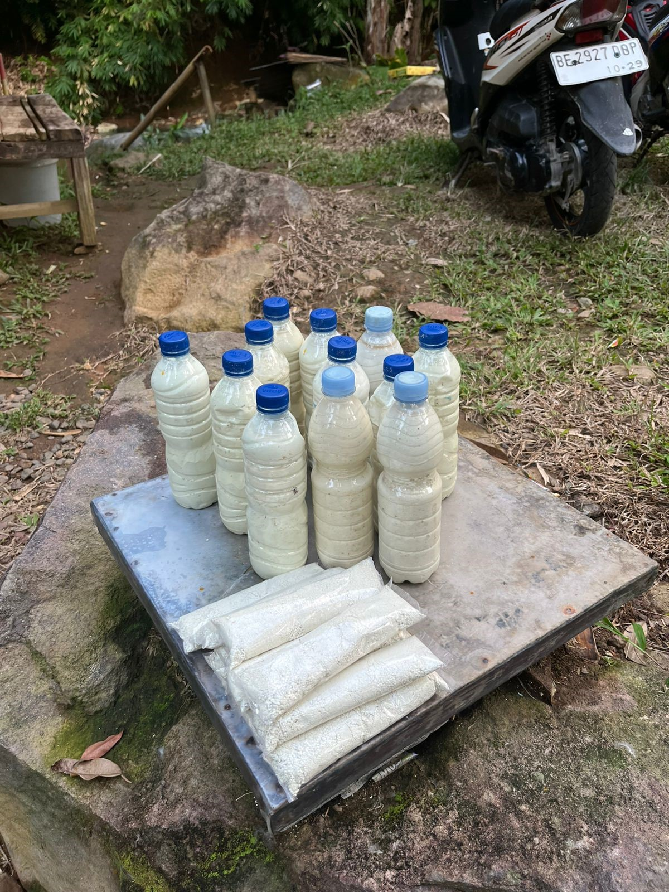
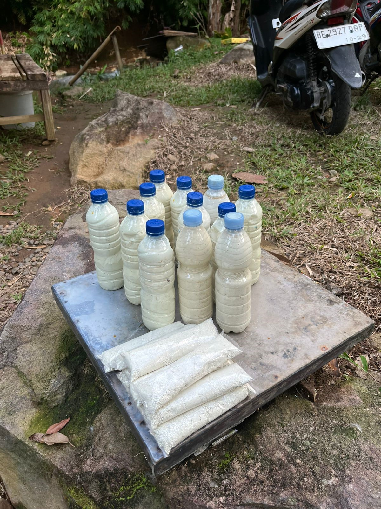
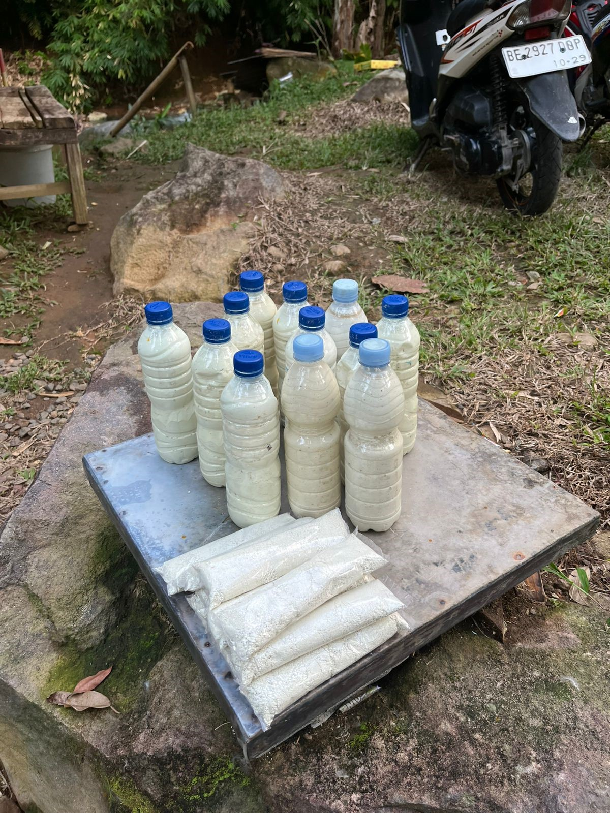

Galeri Wisata


 

Wisata alam air belerang alami di Desa Kecapi, Kalianda – tempat relaksasi, kesehatan, dan keindahan alam Gunung Rajabasa Lampung Selatan.
Way Belerang Simpur merupakan destinasi wisata alam unggulan Desa Kecapi yang dikenal dengan sumber air belerang alami. Sejak lama, lokasi ini dimanfaatkan masyarakat untuk relaksasi dan kesehatan kulit.
Way Belerang (berasal dari bahasa Lampung: Way = air, Belerang = belerang) terbentuk secara alami karena aktivitas vulkanik Gunung Rajabasa. Air panas yang mengandung belerang/sulfur ini keluar langsung dari sumber mata air panas bumi di kawasan pegunungan tersebut.
Way Belerang Simpur menawarkan nuansa alami di sekitar kaki Gunung Rajabasa. Air belerang alami di tengah suasana alam hijau yang masih asri dan alami.
Sejak lama, masyarakat lokal mempercayai bahwa berendam di air panas Way Belerang Simpur dapat menyembuhkan berbagai penyakit kulit, seperti gatal-gatal, panu, dan jerawat. Selain itu, belerang dipercaya dapat meredakan nyeri sendi dan memberikan relaksasi, yang membuat tempat ini populer sebagai wisata kesehatan.
Terdapat 2 kolam pemandian dengan air belerang alami dan air gunung, serta ada aliran alami dari air panas.
Tempat istirahat yang nyaman untuk keluarga.
Area parkir, mushola, toilet, dan fasilitas pendukung lainnya.

Lokasi: Desa Kecapi, Kecamatan Kalianda, Kabupaten Lampung Selatan
Jam Operasional: 06.00 – 18.00 WIB
Tiket Masuk: Terjangkau untuk semua kalangan
Tips: Gunakan alas kaki nyaman dan bawa perlengkapan pribadi.